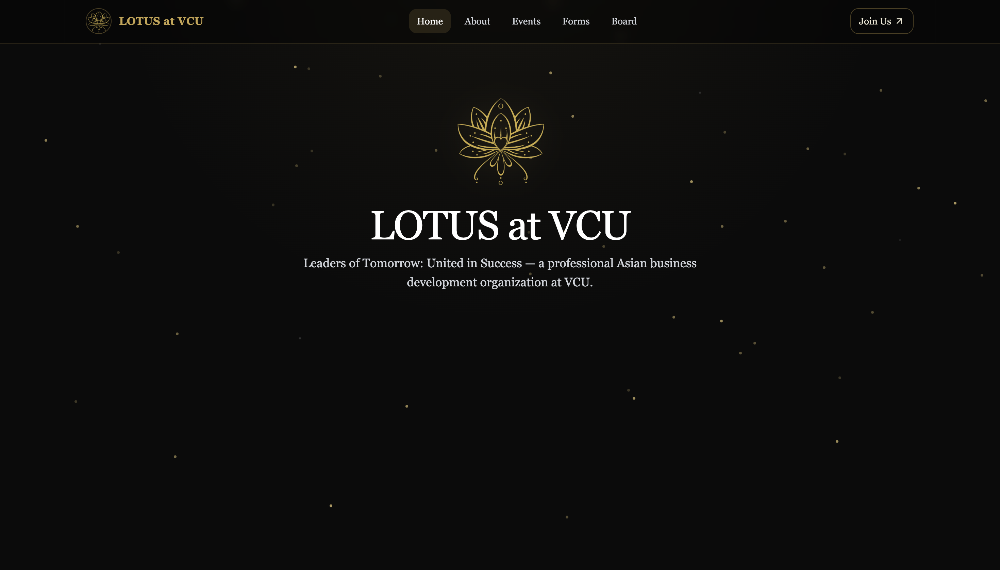

Projects
Campus Printer Monitor Web App
Developed an in-house web application to monitor campus printers, enabling proactive maintenance and automating support ticket creation. The solution cut manual weekly checks from 4.5 hours to 45 minutes.

LOTUS at VCU Organization Website
Designed and developed a responsive informational website for a VCU student organization I co-founded, serving as a central hub for new members to learn about the mission, events, and leadership.
About Me
Experience

Information Technology Intern
VCU Technology Services
June 2024 - Present
- Created internal tools to simplify technical operations and reduce manual maintenance tasks.
- Assisted teams across campus with troubleshooting, configuration, and technical support.
- Helped improve efficiency by supporting automation initiatives within university IT workflows.

DevOps Engineer Intern
CSC Leasing
August 2025 - December 2025
- Built automation tools to improve document processing and reduce manual workload.
- Supported cross-functional teams by refining data workflows and improving decision turnaround times.
- Helped streamline exception handling between internal groups to enhance operational efficiency.

Information Security Intern
Sumitomo Mitsui Banking Corporation (SMBC)
June 2025 - August 2025
- Supported security process improvements by identifying workflow gaps and presenting enhancements.
- Developed automation solutions to improve tracking and monitoring activities for security operations.
- Contributed to strengthening incident response through improved visibility into key systems.
Skills
Languages
Security & ITSM
Cloud & Dev Tools
Data & Visualization
Get In Touch
I'm currently seeking new opportunities and connections. Feel free to reach out via email or connect with me on LinkedIn.
Say Hello